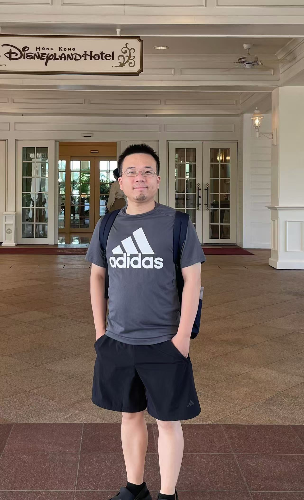

Qingyong Zhu
Assistant Professor
Research Center for Medical AI
Shenzhen Institutes of Advanced Technology, Chinese Academy of Sciences
Shenzhen, China
[Google Scholar] [GitHub] [LinkedIn]
Email: qy.zhu@siat.ac.cn
Gmail: qngyng.zhu@gmail.com
Address: No. 1068 Xueyuan Avenue, Shenzhen University Town, Nanshan District, Shenzhen
About Me
I earned my master’s degree in Theory and New Technology of Electrical Engineering from Chongqing University of Posts and Telecommunications in 2016. I received my Ph.D. degree in Computational Mathematics from Xi’an Jiaotong University in 2020. From 2020 to 2022, I was a postdoctoral researcher with the Research Center for Medical AI, Shenzhen Institutes of Advanced Technology, Chinese Academy of Sciences, where I now serve as an Assistant Professor. My research interests include computational imaging, inverse problems, geometric deep learning, and generative artificial intelligence. I have led or participated in multiple research projects supported by national, provincial, and municipal natural science foundations.
Recent News
- [2026.08.22] Attended the UMI 2026 Annual Conference in Xinxiang, China.
- [2026.06.16] We released an updated version of CogGen, a fully unsupervised scan-specific framework for compressively sampled MRI reconstruction.
- [2026.05.15] Attended the 15th National Conference on Inverse Problems, Imaging and Applications at Wenzhou-Kean University.
Selected Publications
The selected works below list me as first, co-first, or co-corresponding author. * Equal contribution; # Co-corresponding author. For a complete list, please visit my Google Scholar profile.
-
Q. Zhu, Y. Tan, X. Gu, and D. Liang.
CogGen: Cognitive-Load-Inspired Fully Unsupervised Deep Generative Modeling for Compressively Sampled MRI Reconstruction.
arXiv preprint arXiv:2603.04438, 2026.
[Paper] -
A. Cui*, Q. Zhu*, L. Zhang, and S. Xue.
Logarithmic Function Minimization to Compressed Sensing With Application to Magnetic Resonance Imaging.
Numerical Algorithms, vol. 101, no. 3, pp. 2043–2067, 2026.
[Paper] -
Q. Zhu, M. Shi, Z.-X. Cui, H. Zeng, and D. Liang.
Boosting of Mutual-Structure Denoising: A Plug-and-Play Solution for Compressive Sampling MRI Reconstruction With Theoretical Guarantees.
IEEE Signal Processing Letters, vol. 32, pp. 1880–1884, 2025.
[Paper] -
Q. Zhu, B. Liu, Z.-X. Cui, C. Cao, X. Yan, Y. Liu, J. Cheng, Y. Zhou, Y. Zhu, H. Wang, H. Zeng, and D. Liang.
PEARL: Cascaded Self-Supervised Cross-Fusion Learning for Parallel MRI Acceleration.
IEEE Journal of Biomedical and Health Informatics, vol. 29, no. 5, pp. 3086–3097, 2025.
[Paper] -
M. Shi*, Q. Zhu*, B. Liu, and Y. Li.
Weak Submodularity Implies Localizability: Local Search for Constrained Non-Submodular Function Maximization.
Discrete Mathematics, vol. 348, no. 2, article 114287, 2025.
[Paper]
-
X. Li, Y. Yang#, Q. Zhu#, J. Ma, H. Zheng, and Z. Xu.
Noise-Generating Mechanism-Driven Implicit Diffusion Prior for Low-Dose CT Sinogram Recovery.
IEEE Transactions on Radiation and Plasma Medical Sciences, vol. 9, no. 5, pp. 586–597, 2025.
[Paper] -
Z.-X. Cui*, Q. Zhu*, J. Cheng, B. Zhang, and D. Liang.
Deep Unfolding as Iterative Regularization for Imaging Inverse Problems.
Inverse Problems, vol. 40, no. 2, article 025011, 2024.
[Paper] -
Q. Zhu, Z.-X. Cui, Y. Liu, J. Cheng, K. Zhao, H. Wang, Y. Zhu, and D. Liang.
Characteristic-Constrained Accelerating MR T1ρ Mapping With Blockwise Infimal Convolution of Matrix Elastic-Net Regularization.
Medical Physics, vol. 50, no. 4, pp. 2224–2238, 2023.
[Paper] -
Q. Zhu, B. Liu, Z.-X. Cui, J. Cheng, C. Cao, Y. Liu, D. Liang, and Y. Zhu.
Accelerated Cardiac Cine MRI Using Spatiotemporal Correlation-Based Hybrid Plug-and-Play Priors (SEABUS).
Physics in Medicine & Biology, vol. 67, no. 21, article 215008, 2022.
[Paper] -
Q. Zhu, W. Wang, J. Cheng, and X. Peng.
Incorporating Reference Guided Priors Into Calibrationless Parallel Imaging Reconstruction.
Magnetic Resonance Imaging, vol. 57, pp. 347–358, 2019.
[Paper]